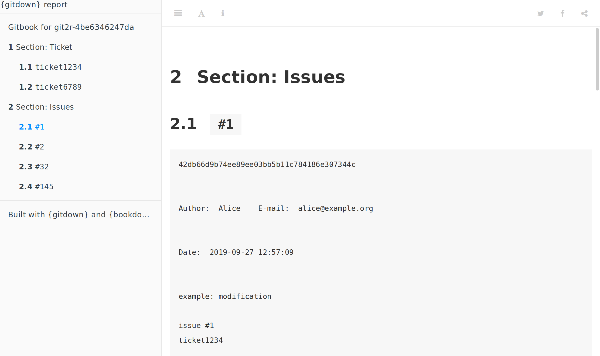

The goal of {gitdown} is to build a bookdown report of commit messages arranged according to a pattern. Book can be organised according to git tags, issues mentionned (e.g. #123) or any custom character chain included in your git commit messages (e.g. category_ for use like category_ui, category_doc, …).
Full documentation on {pkgdown} site : https://thinkr-open.github.io/gitdown/index.html
Example
This is a basic example which shows you how to solve a common problem:
Get commits with issues mentionned. The searched pattern is a # followed by at least one number: pattern = "#[[:digit:]]+".
get_commits_pattern(repo, pattern = "#[[:digit:]]+", ref = "master") %>%
select(pattern, everything())
#> 4 commits found.
#> # A tibble: 6 x 10
#> pattern sha summary message author email when order
#> <chr> <chr> <chr> <chr> <chr> <chr> <dttm> <int>
#> 1 #32 21d0… Add NE… "Add N… Alice alic… 2019-09-27 13:29:35 4
#> 2 #1 21d0… Add NE… "Add N… Alice alic… 2019-09-27 13:29:35 4
#> 3 #2 5088… Third … "Third… Alice alic… 2019-09-27 13:29:35 3
#> 4 #145 5088… Third … "Third… Alice alic… 2019-09-27 13:29:35 3
#> 5 #1 99a5… exampl… "examp… Alice alic… 2019-09-27 13:29:35 2
#> 6 <NA> 480e… First … First … Alice alic… 2019-09-27 13:29:35 1
#> # … with 2 more variables: tag.name <chr>, tag.message <chr>Create a gitbook of commits sorted by a pattern
git_down(repo, pattern = c("ticket[[:digit:]]+","#[[:digit:]]+"),
names_section = c("Ticket", "Issues"))
Please note that the ‘gitdown’ project is released with a Contributor Code of Conduct. By contributing to this project, you agree to abide by its terms.